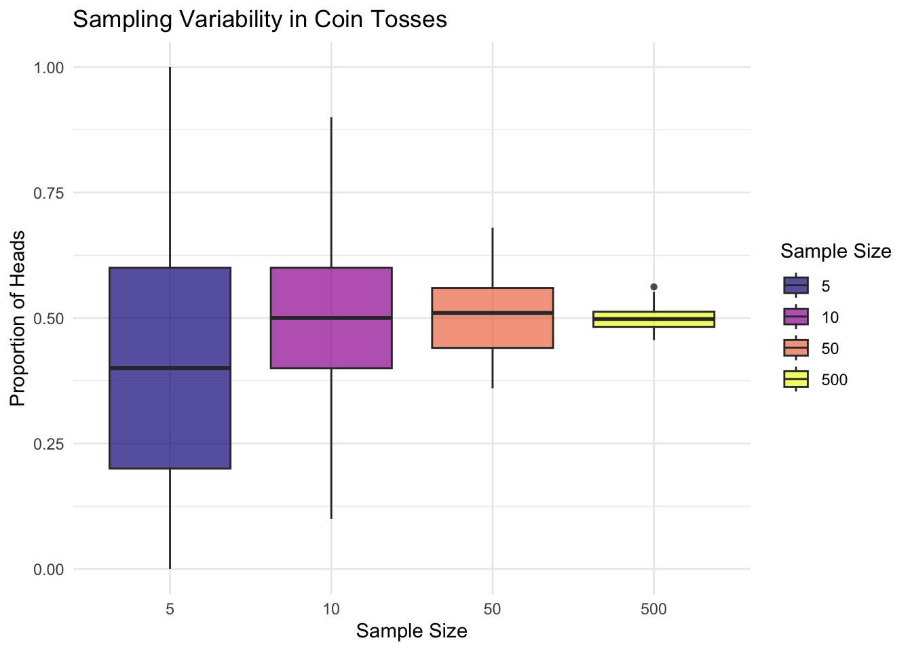

Introduction to SAE
Background
In recent years, there has been an increasing demand for detailed disaggregated data at small geographical levels. The growing interest in subnational spatial units such as cities, neighbourhoods, and other small areas requires more granular data than what is typically available. This detailed information is essential for making informed policy decisions and effectively monitoring specific goals. For example, fields like poverty mapping, income estimation, health statistics, or environmental monitoring often require reliable estimates of subpopulations or domains where samples are too small or even non-existent [@molina2010small, @rao2016empirical, @clark2021small, @lahiri2006small]. This can cause severe problems when trying to draw conclusions about these small areas.
Traditionally, the way of obtaining information about an area involves the use of sample surveys. Survey sampling consists of selecting an \(n\) number of observations from a finite population of \(N\) individuals and using the sample to draw conclusions about the entire population [@chambers2011sample]. Typically, these surveys allow for generating estimates for the total population and, usually, some specific domains. However, many times analysts need to make estimates for areas that are different from the predefined survey domains. What usually happens is that the sample sizes of these desired areas are either too small or even non-existent, which causes serious problems when trying to draw reliable estimators [@morales2021course]. This is because the small population sizes of these domains derive in unacceptably large standard errors, making the estimators unreliable [@ghosh1994small].
This section will provide the necessary background information to understand what SAE is and why it is necessary for overcoming the limitations associated with traditional sample-based estimations.
Introduction to Small Area Estimation
Small area estimation (SAE) is a statistical technique for producing reliable information for small groups or regions when regular survey data does not provide enough information. This methodology combines existing survey data with auxiliary information –such as census data, or other appropriate indicators– to improve the estimates[^An estimate is an educated guess on the approximate value of a variable based on available data.] for our variable of interest.
Traditionally, one way to generate an estimate is using the sample information to draw conclusions about the whole population. This can be done by simply suming the sample values of the variable of interest –target variable– and multiply it by the sample weights [@horvitz1952generalization]. Methods that only use smaple data to generate estimates about the target variable are known as direct estimators. Direct methods pose a series of advantages, such as their simplicity and intuitive calculation or the lack of dependance on external data sources. However, the very qualities that make these estimators attractive are also their greatest limitations. Since they rely only on sample data, their accuracy is directly linked to the sample’s size and representativeness, a challenge that is not always easy to solve.
To exemplify the problem, let us assume that we are interested in estimating child malnutrition rates in rural areas. Suppose a national health survey is conducted to assess malnutrition, but the sample size varies across districts. In urban centers, where more data is collected, direct estimators can provide reasonably accurate and stable estimates. However, in rural districts with smaller sample sizes, the same method produces highly unstable estimates, making it difficult to determine whether a district truly has higher or lower malnutrition rates or if the observed differences are simply due to random variation. This lack of reliability poses a serious challenge for policymakers and organizations that need precise data to allocate resources effectively. In such cases, alternative methods are needed to improve these estimates, allowing for more robust and stable results even when direct survey data is limited.
Challenges to traditional survey-based estimation
The main challenge that justifies the use of small area estimation (SAE) over traditional survey-based methods is the lack of sufficiently large sample sizes. In the previous example, authorities sought to obtain a more detailed understanding of malnutrition rates among children in rural areas. However, for some districts, the available sample sizes were too small to yield reliable estimates, leading to high uncertainty. To illustrate why small samples can be problematic, we can use a simpler example.
Consider the probability of getting heads when tossing a fair coin. We know that, in theory, the probability of heads is \(0.5\). However, if we only toss the coin a few times, the observed proportion of heads can fluctuate significantly, leading to unstable estimates of the true probability. The smaller the number of tosses, the more random variation we see. To demonstrate this effect, we can simulate what happens as we increase the number of tosses (sample size), using \(n = (5, 10, 50, 500)\). By comparing the results, we can see how larger sample sizes reduce variability, producing estimates that are closer to \(0.5\), the true probability—just as SAE helps stabilise estimates when working with small datasets.
Increasing the sample size is, however, not always viable. The two main reasons for this are the monetary cost and the impracticality of increased samples. Every additional survey response requires more resources –interviewer wages, transportation, data processing, administrative overhead– that sometimes are unavailable. These costs can be even higher if the surveys have to be conducted in remote or hard-to-reach areas. Additionally, if we work with past surveys, increasing the sample size is not possible. It could also be the case that some target populations are difficult to access or are reluctant to provide information. In this cases, sample sizes will also be very limited and difficult to expand.
How small area estimation helps
SAE methods are designed to improve the efficiency of the estimations derived from direct methods by combining survey sampling methodologies with statistical models. SAE allows for estimating parameters of small subsets –often refered to as small areas or domains– of the original population. These domains can represent either a geographical area or a population subgroup for which the sample is small [@morales2021course].
Contrary to direct estimation methods, SAE improves the quality of the estimates by using data from outside the domain area. This is achieved by identifying similar domains and leveraging their data to improve the estimate for the area of interest, effectively “borrowing strength” from related regions or subpopulations to improve accuracy. SAE can also incorporate information from different time periods as auxiliary data from either the same or a different domain area.
Real-world applications of SAE
SAE’s versatility as a statistical methodology has led to its application across multiple fields. National institutes of statistics and other international organisations –UK Office for National Statistics, US Bureau of Census, the Statistical Office of Italy, or the United Nations– rely on this methodology to produce estimates for domains not explicitly included in the sampling design [@kreutzmann2019r]. This information is particularly useful for policy making and resource allocation. For instance, in the UK, the Office for National Statistics’ unemployment annual unemployment estimates and the estimates of average income by electoral ward are calculated following this methodology [@ONS2020SAE]. International organisations such as the World Bank have also applied SAE to estimating poverty rates [@]. With estimates at local level being key for poverty reduction, having information at higher spatial resolution helps policy-makers delivering better targetted policies and resource allocation.
@finucane2014bayesian combined a wide range of data soures to estimate trends on health indicators at country, region, and global levels. The methodology used in this study borrows strength in time, age, covariates, and within and across country clusters to generate unbiased estimators in domains where data are sparse.
@bennett2023changes explores the relationship between life expectancy changes at very small area level and housing prices and their evolution.
- Poverty mapping
- Education
- Environmental monitoring
Conclusion
The concept and its relevance
Small area estimation (SAE) is a statistical technique used to generate reliable estimates for geographic or demographic areas (domains) where sample sizes are limited [@morales2021course]. This technique has long been used, particularly by demographers interested in estimating population counts and other variables of interest for small areas [@rao2015small]. Applications of SAE to disease mapping by epidemiologists and demographers have been dated back to the eleventh century in England and seventeenth century in Canada [@ghosh1994small]. These primitive small area statistics were primarily based on either census or administrative records, and aimed at complete enumeration, a much more costly approach than nowadays sample survey methods.
If you are trying to draw a conclusion about a group of people based on your knowledge of just a few of them, chances are you will make a mistake and your conclusions will be wrong. This is what having “unacceptably large standard errors” means.
Q1: Why not just increasing the sample size? This would be an easy solution to this problem. However, in most cases expanding the sample is expensive, or even impossible if the analyst is using secondary data.
Key concepts of SAE
- Small area (or domain): is the geographic area or subpopulation where the data is scarce or even non-existent.
- Target variable: is the variable of interest for which estimates are being produced.
- Estimator: is a statistical formula used for calculating an unknown population parameter based on sample data.